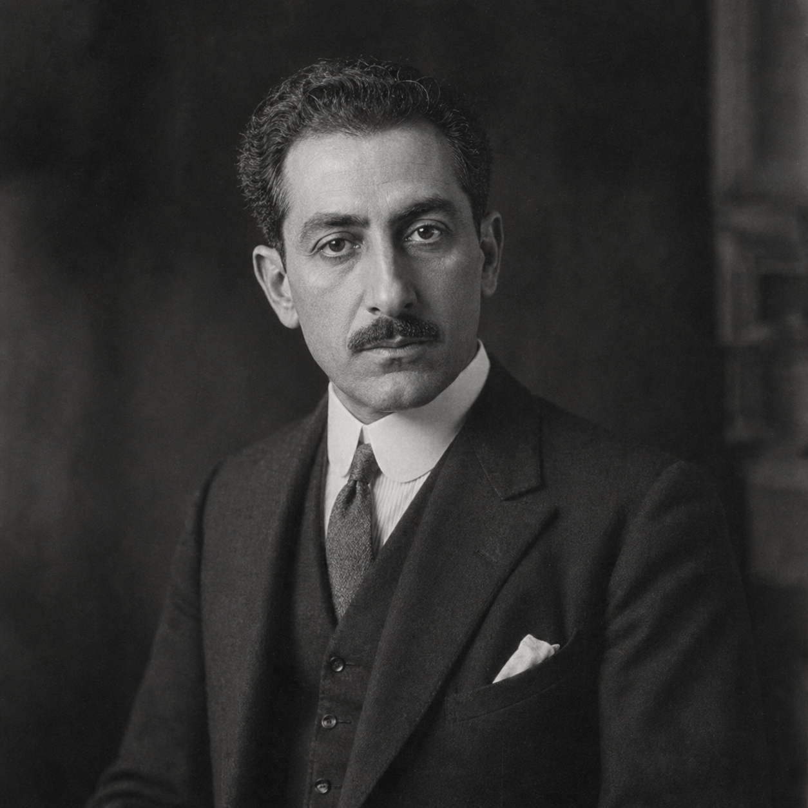

Karim al-Sahir
(375 Points)
Male; Age 35; 5'3", 160 lbs; A compact, dark-eyed Levantine man in his mid-thirties, always carefully dressed but never showily so. He looks more like a patient barrister or dealer than a mystic, until language starts moving too easily around him and everyone in the room feels subtly overunderstood.
| ST: 10/11 [0] | IQ: 16 [80] | Speed: 5.75 |
| DX: 12 [20] | HT: 11 [10] | Move: 5 |
| Dodge: 5 |
Advantages
Alertness +1 [5]; Attractive [5] (Reaction: +1); Charisma +3 [15] (Reaction: +3); Common Sense [10]; Contacts (Consular Lawyer's Clerk) (Skill 15, 9 or less, Somewhat Reliable) [2]; Contacts (Courthouse Clerk) (Skill 15, 9 or less, Somewhat Reliable) [2]; Contacts (Customs Inspector's Clerk) (Skill 15, 9 or less, Somewhat Reliable) [2]; Contacts (Museum Conservator) (Skill 15, 12 or less, Somewhat Reliable) [4]; Contacts (Port Hotel Concierge) (Skill 12, 12 or less, Somewhat Reliable) [2]; Contacts (Shipping Gazette Reporter) (Skill 15, 12 or less, Somewhat Reliable) [4]; Eidetic Memory 1 [30]; Empathy [15]; Filthy Rich [50] (Starting Wealth: $75,000); Lang: Arabic (Native) [0]; Lang: English (Native) [0]; Lang: French (Accented Spoken/Accented Written) [4]; Lang: Greek (Accented Spoken/Accented Written) [4]; Lang: Hebrew (Broken Spoken/Accented Written) [3]; Lang: Persian (Accented Spoken/Accented Written) [4]; Lang: Sanskrit (Broken Spoken/Accented Written) [4]; Lang: Syriac (Broken Spoken/Accented Written) [3]; Lang: Turkish (Accented Spoken/Accented Written) [4]; Patron (Circle of the Broken Seal) (9 or less) [5] (Secret: -5); Patron (Followers of the Right Hand) (15 or less) [60] (Equipment: Standard, +5; Special Qualities (Access to Magic in Non-magical World): Very Unusual, +10; Secret: -5; Subtraction (Minimal Intervention): -5); Patron (Old manuscript dealers and monastery archivists) (9 or less) [10]; Reputation +1 (Reliable provenance man among consuls, claimants, archivists, and careful thieves) [5] (Reaction: +1); Status 2 [5*]; Strong Will +2 [8] (Will: 18); Voice [10] (Reaction: +2).
*Cost modifiers: Filthy Rich.
Disadvantages
Duty (15 or less) [-25] (Involuntary: -5; Subtraction (Extremely Hazardous): -5); Enemy (Unknown Enemies of FRH) [-60] (Unknown: -5; Subtraction (Access to Magic in Non-magical World): -15); Nightmares [-5]; Secret (Counterfeit mummy trade) [-5]; Secret (Psionic powers) [-30]; Sense of Duty (Innocents) [-10].
Quirks
Becomes visibly calmer when translating hostile text.; Buys damaged books before beautiful ones.; Keeps forged customs seals in a prayer-book sleeve.; Never trusts a collection catalog without smelling the paper.; Pays cash for fragments and asks provenance later.. [-5]Powers
Telepathy 10* [35].
*Cost modifiers: Empathy.
Skills
Accounting-18 [4]; Acting-17 [2]; Administration-18 [3]; Anthropology-18 [4]; Archaeology-20 [6]; Area Knowledge (Cairo and Alexandria)-18 [2]; Area Knowledge (Levantine Port Networks)-19 [3]; Bard-22* [2]; Dancing-13 [4]; Detect Lies-20* [2]; Diplomacy-19* [3]; Emotion Sense-16 [4] (Fatigue: 0, Range: 100 yd, Area: subject, Maintain: infinite, Resist: MS, Page: P20); Fast-Talk-17 [2]; History (Ottoman Empire)-15/21 [2] (Specialty: Ottoman Empire); History (Comparative Religion)-15/21 [2] (Specialty: Comparative Religion); Law-16 [2]; Law (Contract)-18 [4]; Leadership-20* [2]; Linguistics-16 [4]; Merchant-19 [4]; Occultism-19 [4]; Performance-19* [2]; Politics-20* [3]; Psychology-20* [3]; Research-20 [5]; Savoir-Faire-22* [5½]; Singing-12* [½]; Streetwise-17 [2]; Telesend-15 [2] (Fatigue: 0, Range: 100 yd, Area: subject, Maintain: min., Resist: MS, Page: P26); Writing-19 [4].
*Cost modifiers: Charisma, Voice, Empathy, Telepathy.
Description
Karim al-Sahir lives in the long afterlife of empire, where archives survive under new flags, monasteries bargain with shipping houses, and respectable collections are often just theft with better paperwork. He moves through that world as a provenance operator, claims man, translator, and scholar of damaged texts. Museums, consulates, port offices, dealer circles, monastery libraries, and family memory networks all know some version of him. The point is not that he is welcome everywhere. The point is that he can work almost anywhere because he is a real polyglot first, a man whose authority begins in language, records, manuscripts, and the dangerous confidence that broken traditions still yield if the right mind leans hard enough on them.That confidence is not morally pure. Karim despises the imperial appetite that strips relics, saints' bones, burial goods, and sacred objects from the people who know what they are. He also knows how to survive in the same marketplace. The contradiction matters. A man who recognizes desecration clearly can still profit by feeding collectors forgeries, substitutions, and counterfeit mummies if the truth will not otherwise pay his way or protect what still deserves protecting. That is why he never quite resolves into either hero or rogue. He is a provenance man whose dignity comes from specificity and whose corruption, when it appears, comes from the same world as his principles.
His telepathy and occult life deepen rather than simplify him. Karim is not a generic mystic scholar. He is a dangerous philological ego, the kind of reader who hears too much in commentary traditions, notices too much in the way people phrase claims, and can become almost predatory in pursuit of the text behind the text. The Circle of the Broken Seal and his shadow world of manuscript dealers and archivists make that appetite organized and perilous. He reads people, papers, and relics with the same composed intensity, as though the difference between a forged provenance, a sectarian lie, and a hidden scripture were only a matter of which shelf one happened to find it on.
For a new player, Karim should feel like a Levantine claims operator who carries whole broken worlds in his briefcase: shipping records, legal pressure, comparative religion, quiet pride, and the knowledge that history is rarely clean. He is one of FRH's best examples of how dignity comes from professional and historical specificity, not from turning a man into a symbol.